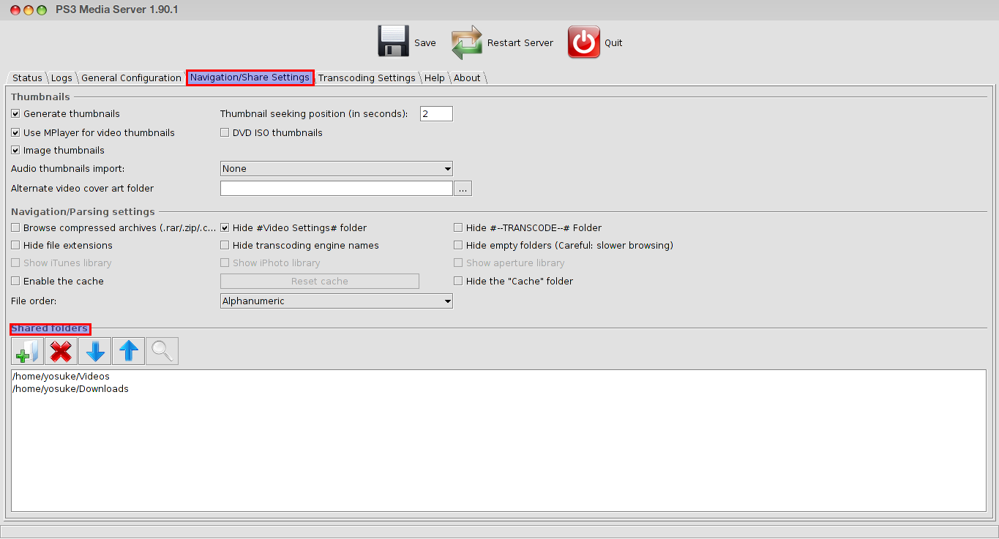

Hey guys !!!
As always, the story of grandpa Joe. Like a lot of people, i like watching movies and documentaries. And i used to sleep in bed with my computer because i was too tired to seat on the desk before sleeping. Having my laptop in my bed next to me wasn't that comfy. So i decided to look for an app which will stream my movies and documentary from my Pear OS (which doesn't exist anymore) to any devices connected to the same network (Other computers, smartphones and tablets or consoles games). I've tried rygel. Butit wasn't working that well. I kept digging, and i finally found Ps3 Media Server, which has been a lifesaver.
How to install it ?
yosuke@loking:~$sudo aptitude install ps3mediaserver
The only thing which is required to set up is below:

Then all you need to do, is the install any UPNP client on the device on which you want to watch/listen your media. Most consoles games such as Ps3 and Xbox have already those kind of player pre-installed.
Comments !